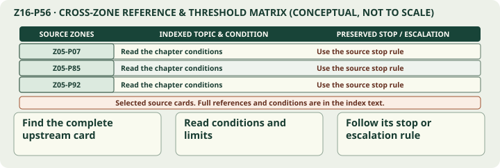

Z16-P56 · Field reference atlas · New manuscript
Underground Roots, Bulbs, Site Collection Rules and Lethal Lookalike Index
Locate the original encyclopedia cards for underground Roots, Bulbs, Site Collection Rules and Lethal Lookalike Index.
When it applies · Offline reference lookup. The linked chapter defines the situation, audience and limits.
Equipment · Offline reader or the complete linked source cards in print.

Actions
- Open Z05-P07 for underground Structures: Taproots, Rhizomes, Tubers and Bulbs; Z05-P85 for wild Leek & Wild Onion (Allium tricoccum & A. canadense) vs Death Camas & Lily-of-the-Valley.[A10, B11, B01]
- Open Z05-P92 for wild Carrot (Daucus carota) vs Lethal Poison Hemlock & Water Hemlock STOP Card; Z05-P93 for public-Land Root Digging Prohibitions and Rare Flora Conservation; Z05-P132 for false Hellebore (Veratrum) & Lily-of-the-Valley (Convallaria majalis).[A10, B01, B17]
- Read the linked card’s applicability, equipment and stop conditions together. Keep review and source limitations attached to any excerpt.[A10, ED]
Failure recognition · Acting on a keyword or title while overlooking an upstream exception or stop condition.[A10, ED]
Verify · Confirm the exact page ID and read the full conditions before using the reference.[A10, ED]
Stop or change course · If the situation falls outside a linked card’s conditions or its stop rule applies, stop using this index as a decision aid. Follow the full card and current local directions.[A10, ED]
Evidence and editorial notes
- A10 · FEMA / Ready.gov · Make a Plan (current web edition)
- Section: Offline reader navigation, historical lineage, and HOLD transparency · Conditions: Using the complete 16-zone offline archive, zone readers, and print proofs
Support: Navigation aids expose draft status, reconstruction lineage, open diagnostic photo needs, and pending specialist holds on every lookup path.
Limitations: This index entry does not independently establish any safety, regulatory or diagnostic instruction. · Conflicting evidence: None noted.
Editorial note: Index design and cross-reference policy. Substantive directions come from linked upstream chapter claims. · Specialist reviewer: Accessibility, print QA, and editorial reviewer
Primary source · checked 2026-11-24 - B01 · Bell Museum (UMN) · Minnesota Biodiversity Atlas (Current web edition)
- Section: Minnesota Biodiversity Atlas regional occurrence and specimen data · Conditions: Documenting regional plant and fungal distribution in Minnesota
Support: Regional atlas records establish verified county-level occurrences and phenology windows for Minnesota plants and fungi.
Limitations: Occurrence maps confirm regional presence only; they never confirm a field specimen identity or consumption suitability. · Conflicting evidence: None noted.
Editorial note: Anchors Z05 Minnesota regional taxonomy. · Specialist reviewer: Bell Museum / regional botanist
Primary source · checked 2026-11-25
Current assessment · A04-B01 (2026-11-25) · Reopened: earlier closure narrowed (A04): A portal links individual records. Only dated matched vouchers can establish a reported collection. Unqualified occurrence certainty and general phenology windows exceed scope. Limits: Specialist review PENDING (Bell Museum / regional botanist); publication HOLD. All release decisions pending. - B11 · CDC · Water Hemlock Poisoning — Maine, 1992 (1994)
- Section: Maine case description and editorial note · Conditions: Suspected water-hemlock ingestion
Support: Water hemlock ingestion can cause severe poisoning including seizures. Suspected poisoning needs prompt emergency or poison-centre advice.
Limitations: The case concerns Cicuta maculata. It cannot identify a plant outdoors or establish Conium toxin mechanism, dose, or onset. · Conflicting evidence: Conditions are recorded in the A03 audit.
Editorial note: Mandatory Z05 lethal Apiaceae stop rule. · Specialist reviewer: Botanist and medical toxicologist
Primary source · checked 2026-11-25 - B17 · Minnesota DNR · Minnesota Rare Species Guide and Native Plant Reference (Current web edition)
- Section: Protected rare plants and harvest conservation boundaries · Conditions: Minnesota endangered, threatened, and special-concern flora
Support: Rare native plants (e.g., wild ginseng, orchids, prairie perennials) carry strict legal protections against digging or harvest.
Limitations: Never dig unknown roots or bulbs on public land; verify legal collecting status before touching any specimen. · Conflicting evidence: None noted.
Editorial note: Prevents illegal digging of protected flora. · Specialist reviewer: State botanist and conservation officer
Primary source · checked 2026-11-25
Source lineage · New manuscript (Z16 P20 botanical index) · Classification · New manuscript.